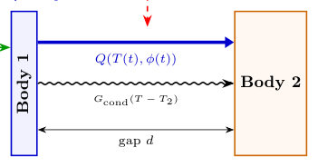

← Index · ← Previous · Next →
Authors: Luke C. Rhodes, Fabian B. Kugler, Olivier Gingras, Carolina Marques, Edgar Abarca Morales, Phil D. C. King, Antoine Georges, Peter Wahl
Type: both · Category: strongly correlated electrons · PDF: https://arxiv.org/pdf/2605.16580v1
Analysis basis: full PDF text, analyzed in chunks
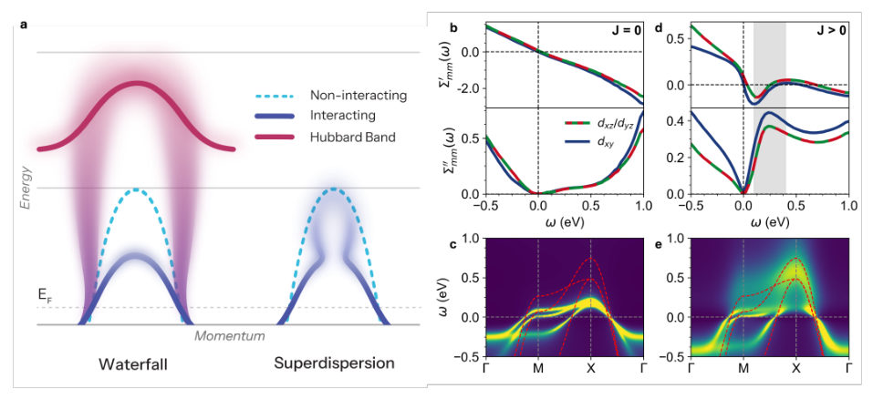
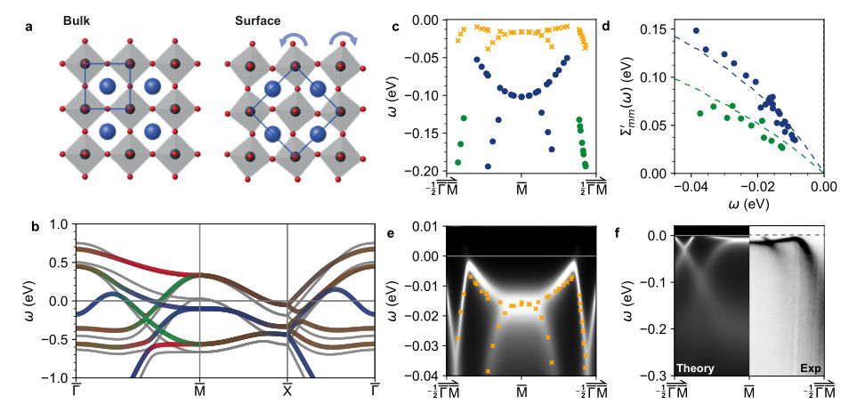
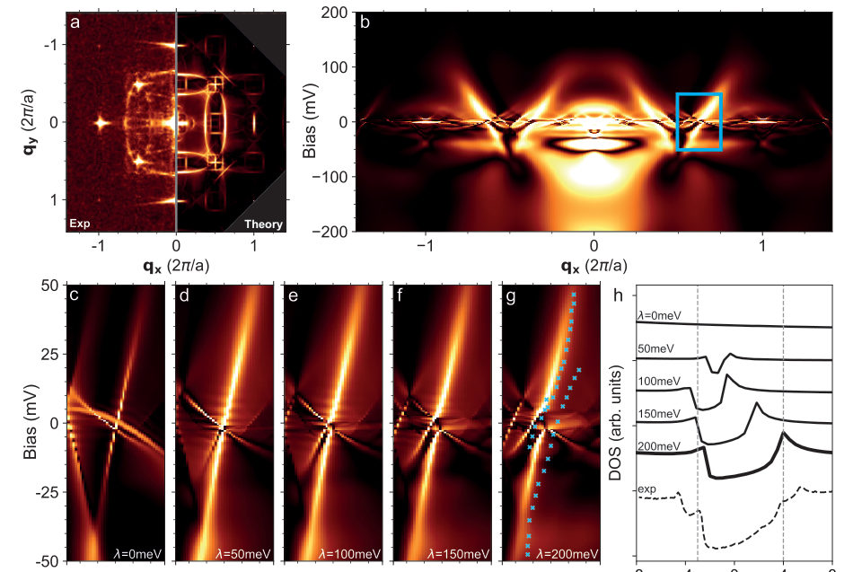
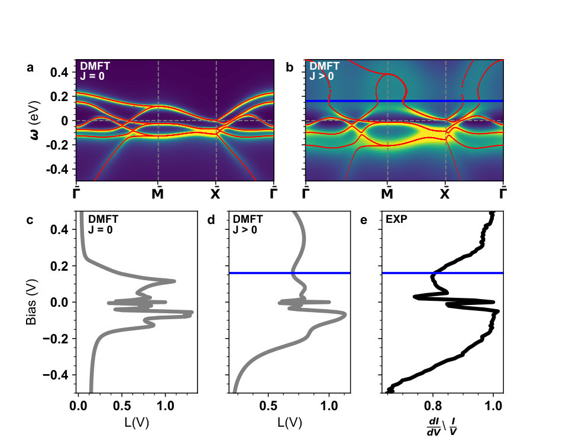
Summary. This paper demonstrates that Hund coupling in Sr2RuO4 creates a unique 'superdispersion' feature where band velocity reverses direction. By using tunneling spectroscopy to probe unoccupied states, the authors successfully match experimental conductance dips with theoretical predictions of non-monotonic self-energy. This provides a new experimental route to identifying Hund physics in multi-orbital materials.
Why it may be interesting. not directly relevant
Main problem. The challenge of experimentally identifying and verifying the unique spectroscopic signature of Hund superdispersion in multi-orbital Hund metals, which is difficult to observe via ARPES due to its presence in unoccupied states.
Main result. The authors provide direct experimental evidence for Hund-induced superdispersion in Sr2RuO4 using tunneling spectroscopy, showing that Hund coupling induces a non-monotonic self-energy that causes band velocity to reverse direction.
Method. The study combines experimental STM/STS and ARPES with a theoretical framework involving DFT, DMFT (using NRG solver), and continuum local density of states (cLDOS) calculations.
Model / system. The physical system is the Hund metal Sr2RuO4, modeled using a multi-orbital (t2g) tight-binding Hamiltonian that incorporates Coulomb repulsion (U), Hund coupling (J), and spin-orbit coupling (SOC).
Key observables. Differential conductance (dI/dV), tunneling spectra (Feenstra function L(V)), quasiparticle interference (QPI) patterns, and the real and imaginary parts of the self-energy.
Important parameters / regimes. Hund coupling (J = 0.4 eV), Hubbard repulsion (U = 2.3 eV), spin-orbit coupling (lambda approx 200 meV), and energy scales of superdispersion (approx 160 meV).
Assumptions / limitations. The bulk self-energy is assumed to be applicable to the surface electronic structure despite surface reconstruction (octahedral rotations).
Figures summary. Figure 1 compares waterfall vs. superdispersion schematics and self-energy components; Figure 2 shows surface vs. bulk structures and DFT band structures; Figure 4 presents spectral functions and simulated tunneling spectra (Feenstra function) showing the 160 meV dip.
Paper structure. The paper introduces the distinction between Mott and Hund physics, describes the experimental STM/ARPES setup and theoretical DFT+DMFT framework, presents the identification of superdispersion in the unoccupied states, and validates the model through comparison of simulated and experimental tunneling spectra.
In cuprate superconductors, electron-electron repulsion results in characteristic spectroscopic features known as waterfalls', where the sharp quasiparticle dispersion transitions into broad Hubbard bands. However, in multi-orbital systems, the additional Hund coupling results in behavior that defies the conventional Mott--Hubbard paradigm, creating qualitatively distinctsuperdispersive' features in the spectral function. Here, we use tunneling spectroscopy to reveal this signature of Hund physics in Sr$_2$RuO$_4$. By combining density functional theory, dynamical mean-field theory, and continuum local density of states calculations, we show that the experimental features are in excellent agreement with theoretical predictions and intimately linked to the non-monotonous energy dependence of the real part of the self-energy in a Hund metal. Our results provide direct experimental evidence for Hund-induced spectroscopic features and open a new route to probing correlation effects in quantum materials.
Authors: Kien X. Nguyen, Ilya Safro, Xiaoyuan Liu
Type: both · Category: quantum information and computing · PDF: https://arxiv.org/pdf/2605.17145v1
Analysis basis: full PDF text, analyzed in chunks
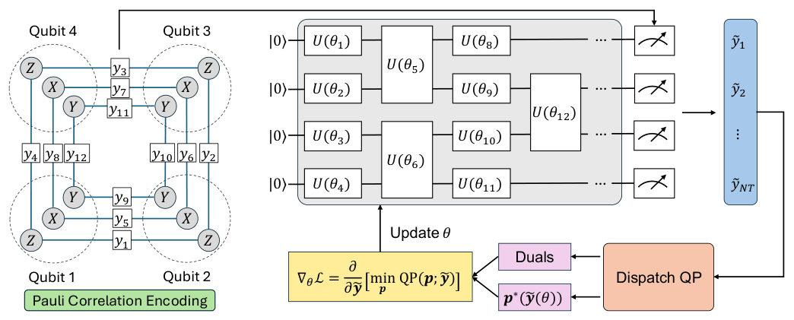
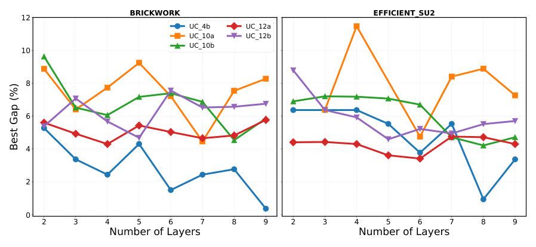
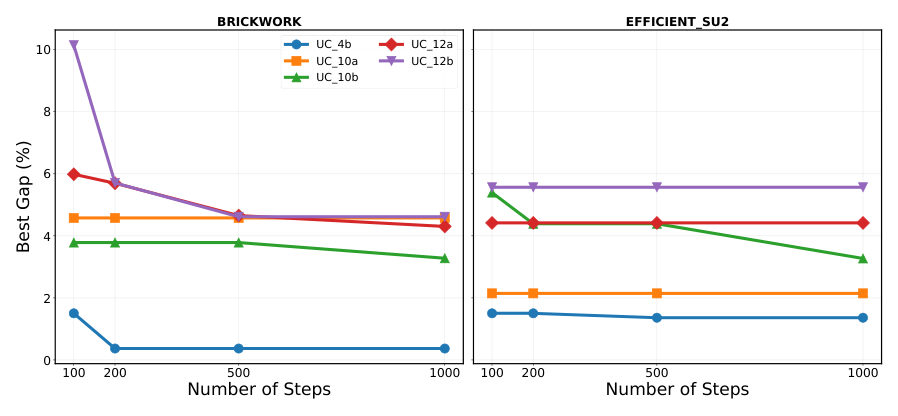
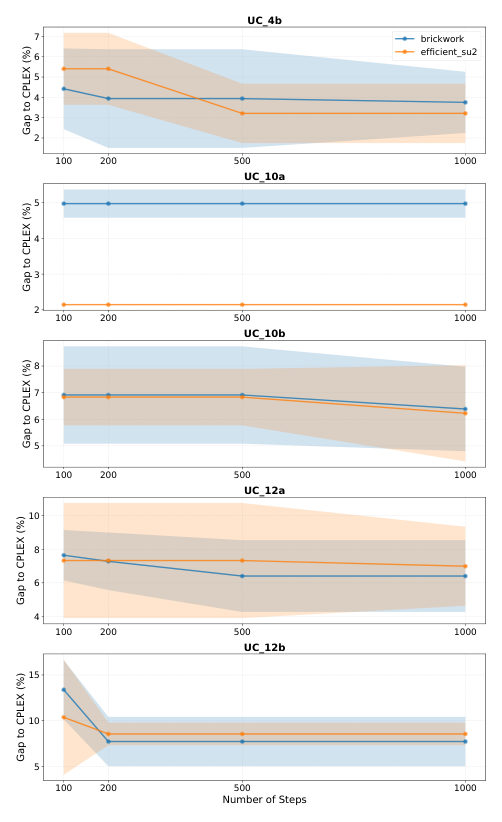
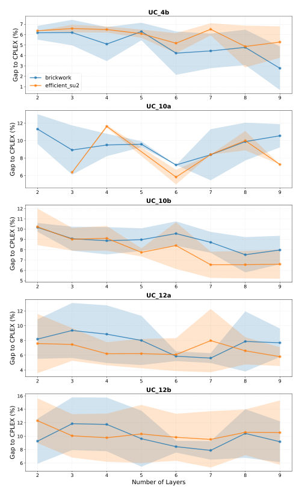
Summary. This paper introduces a way to solve large-scale power grid scheduling problems using much fewer qubits than previously possible. By using Pauli Correlation Encoding, the authors demonstrate that a hybrid quantum-classical algorithm can handle hundreds of decision variables, providing near-optimal solutions for complex energy management tasks.
Why it may be interesting. not directly relevant
Main problem. Scaling the quantum optimization of the Unit Commitment (UC) problem, which is NP-hard, by addressing the prohibitive qubit requirements of traditional encoding methods for multi-period power system scheduling.
Main result. The proposed method scales to 312 binary variables using only 15 qubits and produces feasible schedules with operating costs within 1-7% of the classical CPLEX optimum for small scales and 13-16% for large scales.
Method. A hybrid quantum-classical leader-follower architecture using Pauli Correlation Encoding (PCE) to compress variables into fewer qubits, combined with a differentiable bilevel optimization approach using a classical Quadratic Program (QP) solver.
Model / system. A mixed-integer quadratic bilevel optimization model for power system unit commitment, involving binary on/off decisions and continuous power dispatch subject to load balance, ramping, and reserve constraints.
Key observables. Operating cost gap, feasibility rate, constraint violation percentage, and optimization stability (standard deviation).
Important parameters / regimes. Number of qubits (down to 4-6 for small and 15 for large scales), number of optimization steps, ansatz depth (layers), and PCE encoding parameters.
Assumptions / limitations. The cost function is assumed to be quadratic, and the optimization uses a smooth surrogate/relaxation of constraints to ensure differentiability.
Figures summary. Figure 1 shows the hybrid optimization architecture; Figure 2 and 3 show ablation studies on ansatz depth and optimization steps; Figure 4 and 5 show performance and scalability on large-scale instances.
Paper structure. The paper introduces the UC problem and scaling challenges, details the PCE encoding and hybrid bilevel architecture, describes the gradient-based optimization strategy, presents experimental results on small and large-scale power systems, and concludes with ablation studies and limitations.
Unit commitment is an important optimization problem in power system operations, classified as NP-hard. This paper presents a hybrid quantum-classical method for the unit commitment problem with time-dependent constraints, where decisions must be made about which generators to turn on/off and how much power they should produce over a planning horizon. We use a hybrid quantum-classical optimization procedure to determine the on/off schedules of the generating units and the corresponding power dispatch that satisfies operational constraints such as load balance, generator limits, ramping, and reserve requirements. We frame the optimization loop as a leader-follower structure, where the quantum optimizer leads to give the on/off decisions, and the classical optimizer follows to produce the power level schedule. Leveraging Pauli-Correlation Encoding, our method scales to horizon-wide unit commitment schedules by encoding the binary variables with far fewer qubits. By combining these components, the method can handle multi-period settings while using far fewer qubits than straightforward quantum encodings that allocate one qubit per decision variable as in prior approaches. We evaluate the approach on both small- and large-scale instances, up to 312 binary variables, and show that it reliably produces feasible schedules with competitive operating costs.
Authors: Pranoy Ray, Surya R. Kalidindi
Type: theory · Category: disordered systems and neural networks · PDF: https://arxiv.org/pdf/2605.17147v1
Analysis basis: full PDF text, analyzed in chunks
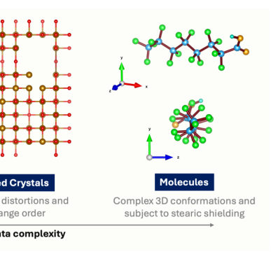
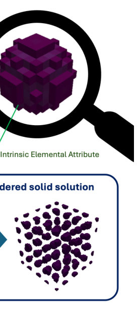
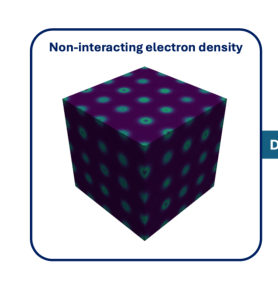
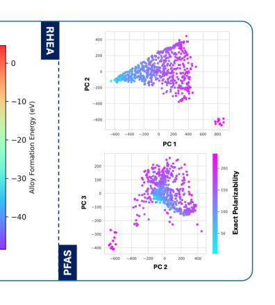
Summary. The paper proposes replacing heavy, data-hungry deep learning architectures with a physics-informed approach using spatial statistics and FFTs. This method enables highly accurate material property prediction even with extremely small datasets and provides a convex latent space suitable for efficient molecular design.
Why it may be interesting. not directly relevant
Main problem. Traditional deep learning models for materials discovery require massive DFT-labeled datasets and struggle with chemically disordered configurations, chiral geometries, and non-convex latent representations that hinder inverse design.
Main result. A physics-informed feature engineering framework using spatial statistics achieves sub-2% prediction error with as few as 10 training samples and provides strictly convex representations for efficient optimization.
Method. The method uses voxelized 3D scalar fields to compute two-point auto- and cross-correlations via Fast Fourier Transforms, followed by PCA for dimensionality reduction into low-dimensional manifolds.
Model / system. The framework is scale-agnostic and applicable to periodic crystals (e.g., Silicon), chemically disordered high-entropy alloys, and non-periodic organic molecules (e.g., PFAS).
Key observables. Two-point spatial correlations, pseudo-charge densities, and structural fingerprints like helicity and short-range order.
Important parameters / regimes. Data-scarce regimes (10-30 training samples), lean neural networks (<100k parameters), and computational complexity scaling as O(S log S).
Assumptions / limitations. The use of non-interacting pseudo-densities neglects explicit charge transfer and electron correlation effects; 2-point statistics may smooth over rare, localized topological anomalies.
Figures summary. Figure 1 shows structural complexity across different regimes; Figure 2 illustrates the voxelization pipeline; Figure 3 shows voxelized data for a high-entropy alloy; Figure 4 depicts the end-to-end workflow; Figure 6 shows a closed-loop autonomous discovery pipeline.
Paper structure. The paper introduces the limitations of current GNNs, proposes a spatial statistics-based feature engineering workflow (voxelization, FFT-based correlations, PCA), demonstrates performance across various material classes (crystals, alloys, molecules), and discusses the utility for inverse design and active learning.
The dominant paradigm in computational materials discovery relies on heavily parameterized deep architectures, including message-passing graph networks and equivariant models, that require millions of DFT-labeled training structures and produce non-convex latent representations that complicate continuous optimization for inverse design. These architectures are impractical in data-scarce regimes, which is the typical case in molecular screening, and exhibit well-documented limitations in capturing chemically disordered configurations and chiral geometries. This review presents feature engineering based on spatial statistics as a physically rigorous and immediately deployable alternative. Molecular structures are encoded as voxelized scalar fields, and two-point auto- and cross-correlations are evaluated deterministically via Fast Fourier Transforms, explicitly transferring the burden of spatial pattern recognition from the learning algorithm to a closed-form, physics-informed operation. Principal component analysis of the resulting correlation maps yields low-dimensional, strictly convex representations that support lean neural networks (<100k trainable parameters) and non-parametric surrogate models, achieving sub-2% prediction error with as few as 10 training samples. Demonstrated across periodic crystals, chemically disordered high-entropy alloys, and non-periodic organic molecules, this framework enables Bayesian active learning and zero-shot extrapolation on commodity hardware, which current large-scale architectures cannot replicate at equivalent data budgets.
Authors: Chisa Hotta
Type: theory · Category: strongly correlated electrons · PDF: https://arxiv.org/pdf/2605.17420v1
Analysis basis: full PDF text, analyzed in chunks
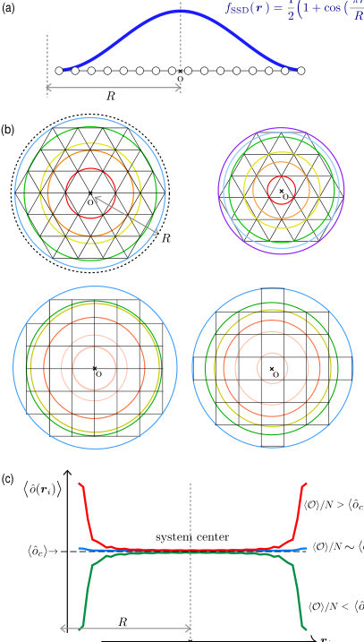
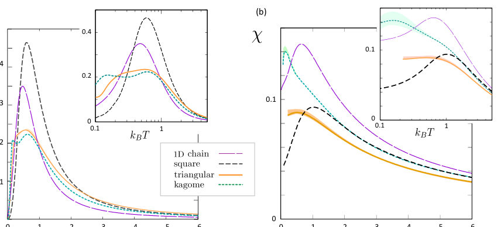
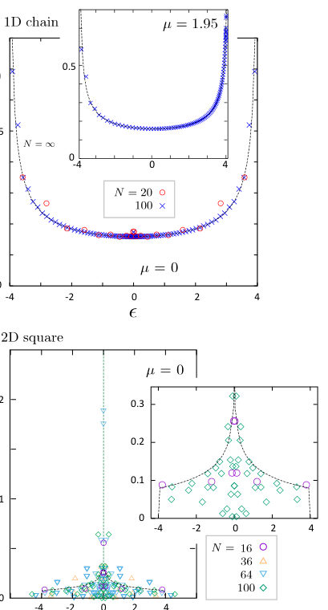
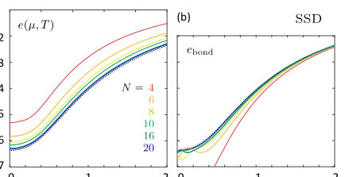
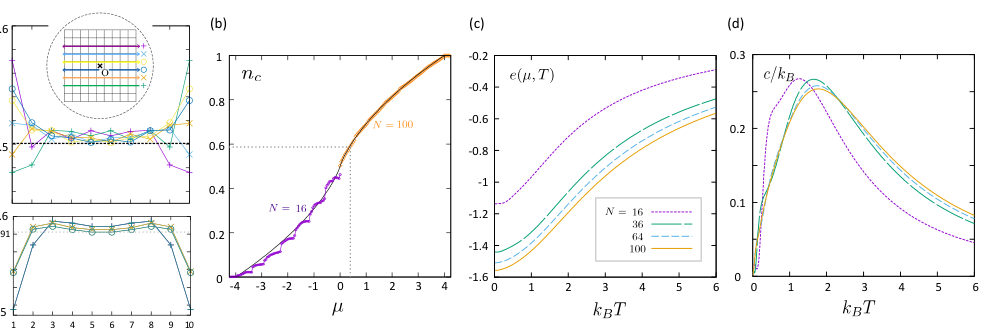
Summary. This paper presents a numerical framework using Sine-Square Deformation to study the thermodynamic properties of frustrated quantum magnets. It successfully captures complex features like double-peak specific heat in kagome lattices, providing a way to mimic the thermodynamic limit using small-scale clusters.
Why it may be interesting. not directly relevant
Main problem. The difficulty of accurately calculating the low-temperature thermodynamic properties of frustrated 2D quantum magnets in the thermodynamic limit due to finite-size effects and the sign problem in traditional numerical methods.
Main result. The study identifies a double-peak structure in the specific heat of kagome and triangular lattices and shows that the kagome lattice exhibits a strong enhancement of magnetic susceptibility at low temperatures due to magnetic excited states.
Method. The Sine-Square Deformation (SSD) technique is applied to the Hamiltonian to create fictitious bulk states, combined with the Thermal Pure Quantum (TPQ) method for finite-temperature calculations.
Model / system. S=1/2 antiferromagnetic Heisenberg models on 1D chains, square, triangular, and kagome lattices.
Key observables. Energy density, specific heat (Cv), magnetic susceptibility (chi), and thermal entropy density.
Important parameters / regimes. Temperature (T/J), exchange interaction (J), and system size (N).
Assumptions / limitations. The SSD method assumes that the center of the deformed system effectively mimics the thermodynamic limit; kernel regression assumes a smooth temperature dependence for extrapolating data.
Figures summary. Figure 1 defines the SSD function and its spatial distribution; Figure 2 compares specific heat and susceptibility across 1D, square, triangular, and kagome lattices; Figure 3 shows the single-particle density of states; Figure 4 demonstrates convergence of energy density; Figure 6 highlights the reduction of the finite-size gap in 1D chains.
Paper structure. The paper introduces the SSD method, validates it using free fermion and 1D chain benchmarks, applies it to 2D square lattices to compare with QMC, and finally investigates the thermodynamic properties of frustrated triangular and kagome lattices.
We study the temperature dependence of the thermodynamic properties of spin-1/2 antiferromagnets on two-dimensional lattices. Our analysis employs the sine-square deformation (SSD), in which a real-space envelope function is applied to the Hamiltonian so that the local energy scale is smoothly reduced to zero at the system boundaries. The quantum eigenstates of the SSD Hamiltonian exhibit bulk-like behavior near the system center, effectively mimicking the thermodynamic limit even in small finite-size calculations. Using these fictitious bulk states, we compute the energy density, specific heat, and magnetic susceptibility as functions of temperature. We find that both the triangular- and kagome-lattice antiferromagnets show either a shoulder or a pronounced double-peak structure in the low-temperature specific heat, whereas the kagome case particularly shows a strong enhancement of magnetic susceptibility down to the lowest temperature range. These direct comparisons, together with the square-lattice and one-dimensional cases, reveal that although both frustrated systems retain a substantial amount of entropy, the low-energy excitations below ~ 0.5J of the kagome lattice are predominantly governed by the magnetic excited states, whereas not much for the triangular lattice.
Authors: Scott Lawrence, Yukari Yamauchi
Type: theory · Category: numerical methods · PDF: https://arxiv.org/pdf/2605.17139v1
Analysis basis: full PDF text, analyzed in chunks
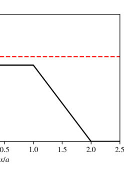
Summary. The paper introduces a new family of stable minimum principles for approximating quantum scattering states using the L1 norm of the Schrodinger equation violation. It proves that this metric allows for rigorous error bounds on the S-matrix and cross sections, making it a robust foundation for numerical scattering algorithms. The method is shown to be applicable to complex systems, including momentum-dependent and many-body potentials.
Why it may be interesting. This is highly relevant for many-body dynamics and numerical physics as it provides a rigorous error-bounding framework for using variational/machine-learning-based wavefunctions to compute scattering observables.
Main problem. Developing stable variational minimum principles for approximating quantum-mechanical scattering states and bounding the error in the resulting S-matrix.
Main result. The authors establish that the L1 norm of the Schrodinger violation provides a stable metric for bounding errors in scattering amplitudes, phase shifts, and cross sections, unlike the L2 norm which can be unstable.
Method. Introduction of a family of stable minimum principles using the L1 norm of the Schrodinger violation, designed to be compatible with modern computational algorithms like Neural Quantum States and Variational Monte Carlo.
Model / system. Nonrelativistic quantum-mechanical scattering involving single-particle, many-body, and momentum-dependent potentials, including Coulomb interactions and scattering of bound states.
Key observables. S-matrix elements, scattering amplitudes, phase shifts, total cross section, and probability flux.
Important parameters / regimes. Energy (E), particle mass (M), potential strength and range, and the L1 norm of the Schrodinger violation.
Assumptions / limitations. The approximate wavefunction is assumed to have the correct ingoing plane wave; potentials are generally assumed to be self-adjoint and decay sufficiently rapidly at large distances.
Figures summary. A schematic of the problem setup.
Paper structure. The paper presents the minimum principle, establishes stability estimates, extends results to general and momentum-dependent potentials, discusses many-body scattering, and provides counterexamples for unstable metrics.
Quantum-mechanical scattering states are energy eigenstates obeying particular boundary conditions, whose behavior at infinity encodes the S-matrix which defines the outcoming of scattering experiments. With an eye toward numerical algorithms for computing nonrelativistic S-matrices, we present a family of stable minimum principles for scattering states. States that approximately satisfy these minimum principles are shown to have a bounded difference with the true scattering states. These minimum principles and stability estimates can be used to obtain rigorous bounds on scattering amplitudes. We show that these minimum principles are applicable to momentum-dependent potentials, long-range (Coulomb) interactions, and elastic or inelastic scattering of bound states.
Authors: Benedikt Poggel, Lena Tokuhiro, Georg Kruse, Jeanette Miriam Lorenz
Type: theory · Category: quantum information and computing · PDF: https://arxiv.org/pdf/2605.18539v1
Analysis basis: full PDF text, analyzed in chunks
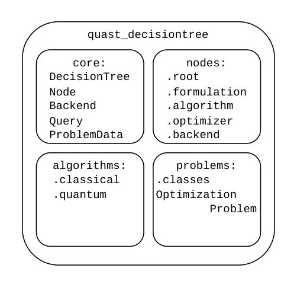
Summary. This paper introduces the QuaST Decision Tree, a modular software framework designed to automate the selection of quantum algorithms and parameters for combinatorial optimization. By using data-driven recommendations and scalability analysis, it reduces the need for manual trial-and-error and helps identify when quantum approaches are practically feasible compared to classical methods.
Why it may be interesting. not directly relevant
Main problem. The quantum software stack lacks a high-level abstraction layer to automate the complex decision-making process involved in selecting optimal algorithms, encodings, and hyperparameters for hybrid quantum-classical optimization.
Main result. The authors present the QuaST Decision Tree (QDT), a modular framework that automates algorithm selection and provides a scalability analysis module to predict the feasibility of Variational Quantum Algorithms (VQAs).
Method. The QDT uses a Directed Acyclic Graph (DAG) architecture with modular nodes and a data-driven automation module that utilizes a database of precomputed benchmarks to estimate required measurement shots.
Model / system. The framework targets quantum-enhanced combinatorial optimization (CO) using models such as QUBO, Ising, and MaxCut, applicable to gate-based NISQ devices, quantum annealers, and future error-corrected systems.
Key observables. Finite sampling error, optimizer tolerance threshold, approximation ratios, and the quantum disadvantage boundary.
Important parameters / regimes. Problem size (number of variables n), number of measurement shots (n_shots), QUBO density, and optimizer convergence thresholds.
Assumptions / limitations. The scalability analysis assumes that the decline of optimizer tolerance follows specific scaling laws (exponential, power-law, or logarithmic).
Figures summary. Figure 1 shows the Python package hierarchy; Figure 2 illustrates the decision tree branching logic for algorithm selection; Table I and II detail the class methods for the QDT core; Table III and IV quantify execution overhead and integration effort.
Paper structure. The paper introduces the problem of software stack gaps, describes the modular architecture and design principles of the QDT, presents a specific automation module for VQA feasibility, validates the framework's efficiency and integration ease, and discusses future directions.
Quantum computers are increasingly powerful. Software tools for the development of quantum-enhanced algorithms are maturing. However, the software stack still lacks the connection to applications that would enable hybrid algorithms combining classical and quantum computing steps. End users need to be assisted in choosing the best combination of preprocessing, postprocessing, classical and quantum algorithms options. The application-facing software stack is therefore required to cover problem modeling, encoding, algorithm selection and hyperparameter tuning. A variety of tools exist for specific recommendations. The QuaST Decision Tree reflects the complexity in combining individual decisions in its modular network structure, consisting of flexible computation nodes with modular recommendations. It can easily be configured to serve in an industrial solver, an HPC software stack, or for rapid prototyping in development. The key ingredient, automation, is delivered by modules. We present one such module judging the feasibility of variational algorithms based on a robust scalability analysis and classification of problem instances. The automation improves the performance of end-to-end solutions, highlights the benefit to be gained from the hybrid quantum solution, reduces expensive trial-and-error testing, and leads to an improved utilization of quantum devices for a practical benefit.
Authors: Anthony N. Papathanassiou
Type: theory · Category: statistical mechanics · PDF: https://arxiv.org/pdf/2605.17631v1
Analysis basis: full PDF text, analyzed in chunks
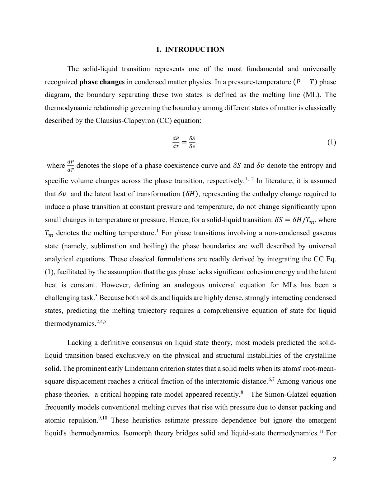
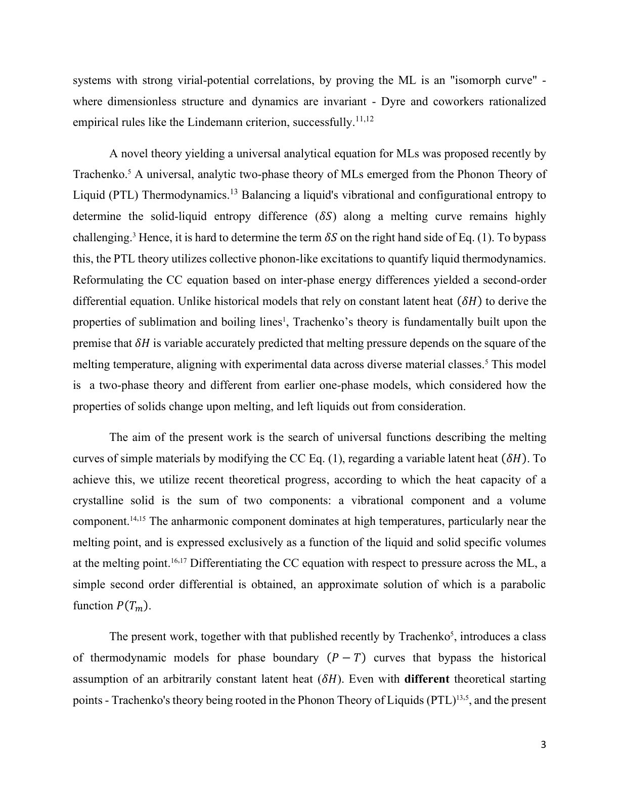
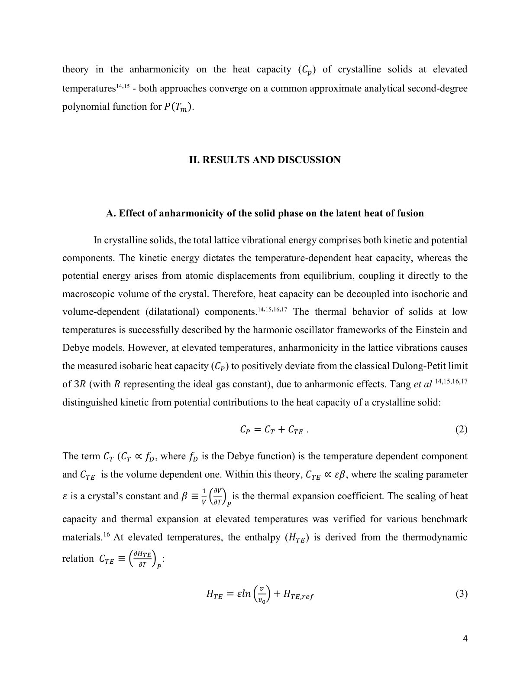
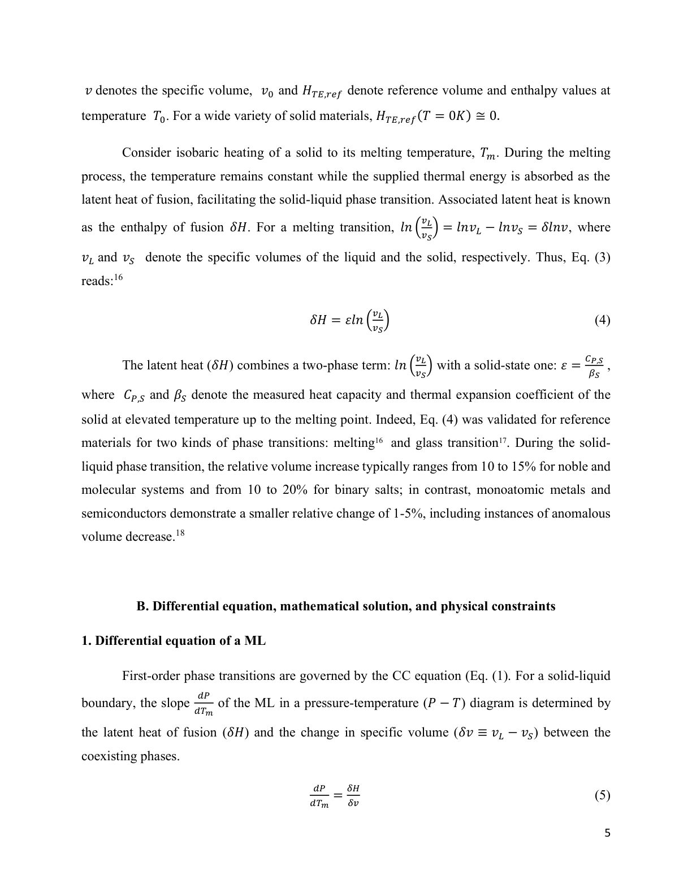
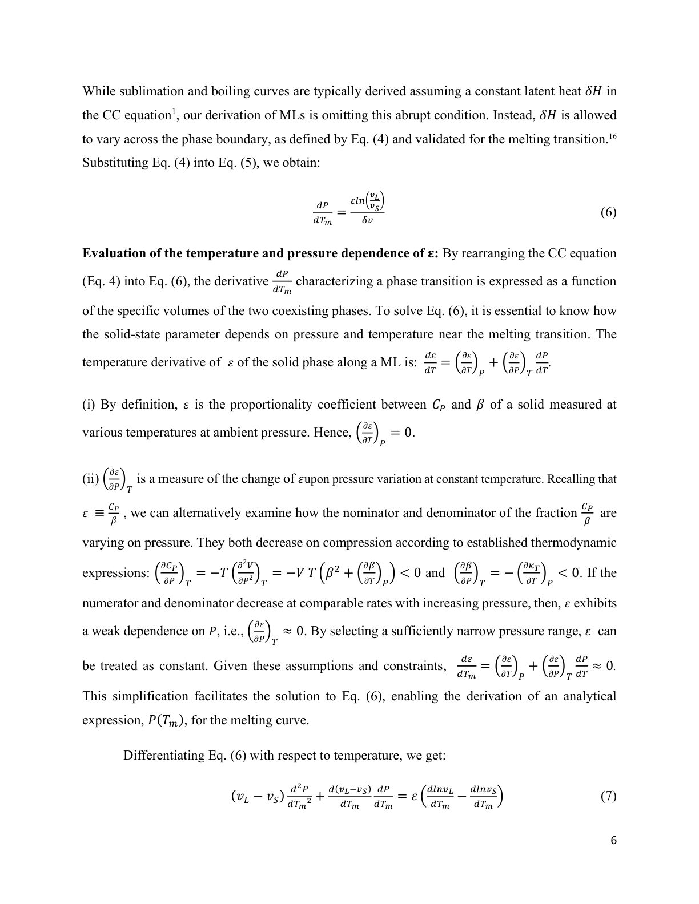
Summary. This paper proposes a new theoretical framework for calculating melting lines by accounting for the variable enthalpy of fusion caused by solid-state anharmonicity. The resulting model predicts a universal parabolic trajectory for phase boundaries that is consistent with both recent phonon-based theories and experimental observations across diverse materials.
Why it may be interesting. not directly relevant
Main problem. The difficulty in defining a universal analytical equation for melting lines in P-T phase diagrams due to the inadequacy of the constant latent heat approximation in the Clausius-Clapeyron relation.
Main result. The derivation of a universal parabolic scaling law for melting lines, which aligns with the Phonon Theory of Liquids and matches experimental data for various substances.
Method. A two-phase analytical model that modifies the Clausius-Clapeyron equation to include a variable enthalpy of fusion correlated to the specific volumes of coexisting phases.
Model / system. A thermodynamic model of the solid-liquid phase transition (melting) applicable to a wide range of condensed matter, including noble gases, molecular systems, metals, and semiconductors.
Key observables. Melting lines (P-T phase boundaries), enthalpy of fusion, and the slope of the melting curve.
Important parameters / regimes. Enthalpy of fusion (delta H), scaling parameter epsilon (Cp/beta), bulk moduli, thermal expansion coefficients, and specific volumes.
Assumptions / limitations. The dominance of the anharmonic, volume-dependent component of heat capacity near the melting point and the assumption that the scaling parameter epsilon remains constant over narrow pressure ranges.
Paper structure. The paper introduces the problem of melting line derivation, develops a modified Clausius-Clapeyron relation based on variable enthalpy, derives a second-order differential equation for the melting line, provides analytical parabolic solutions, and validates the results against existing theories and experimental data.
Conventional derivations of phase boundaries from the Clausius-Clapeyron (CC) relation often employ the constant latent heat approximation to maintain analytical functions of the sublimation and boiling curves. To address the complex thermodynamics of the solid-liquid transition, we develop a two-phase analytical model by modifying the CC equation to account for a variable enthalpy of fusion along the melting line (ML). Our methodology utilizes recent theoretical and experimental progress demonstrating that the isobaric heat capacity of crystalline solids near the melting point features a dominant anharmonic, volume-dependent component. Consequently, the latent heat is correlated to the specific volumes of the coexisting phases. Differentiation of this modified CC relation yields a second-order differential equation governing ML. By imposing appropriate e boundary conditions, physically acceptable approximate parabolic solutions are derived. The parameters of these analytic functions are defined exclusively by fundamental thermophysical properties, including the bulk moduli, thermal expansion coefficients, and specific volumes of the coexisting phases, as well as the isobaric heat capacity of the solid. Our derivation, rooted in solid-state anharmonicity, yields approximate parabolic scaling laws that corroborate with a recent universal model derived from the Phonon Theory of Liquids [K. Trachenko, Phys. Rev. E 109, 034122 (2024)], supporting the universal parabolic nature of melting curves from a completely distinct theoretical foundation.
Authors: Tristan Zaborniak
Type: theory · Category: quantum information and computing · PDF: https://arxiv.org/pdf/2605.17143v1
Analysis basis: full PDF text, analyzed in chunks
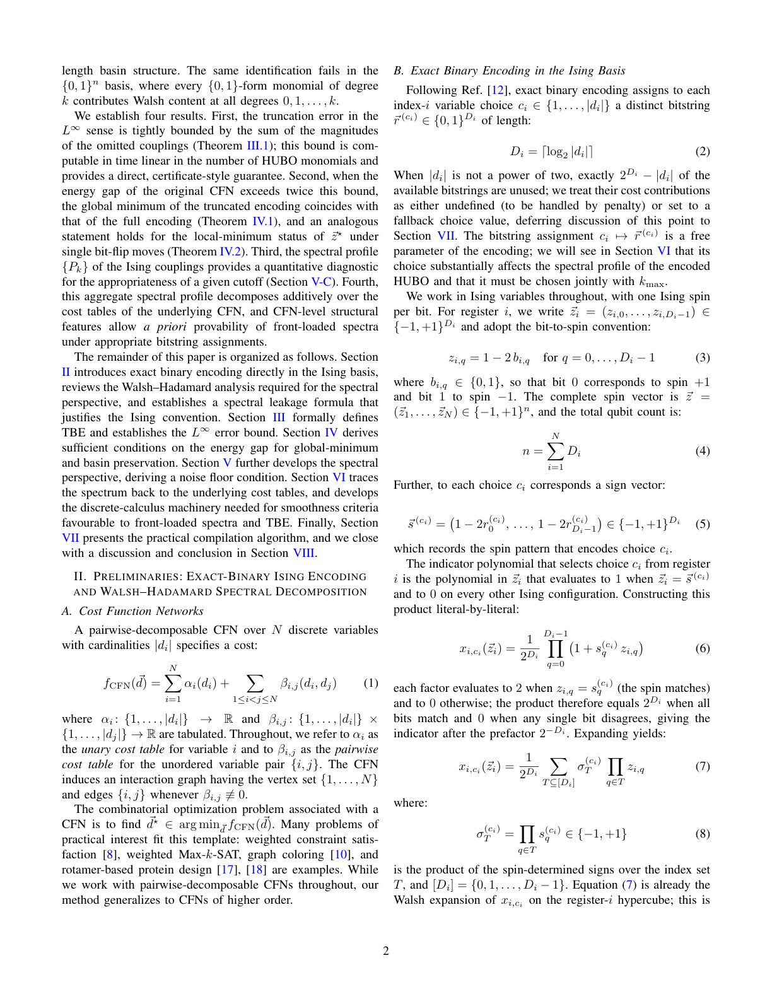
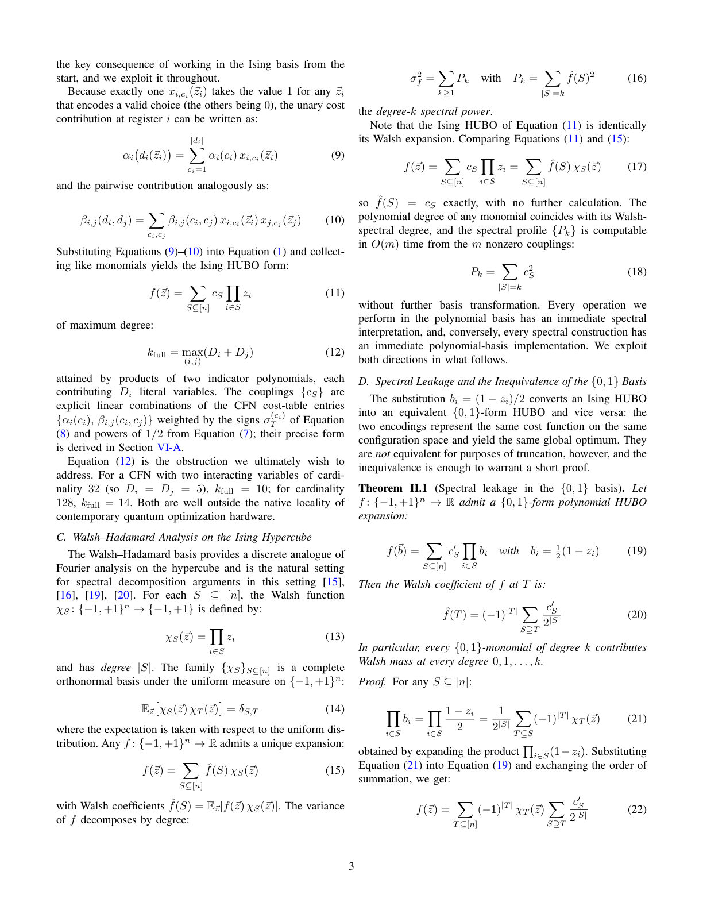
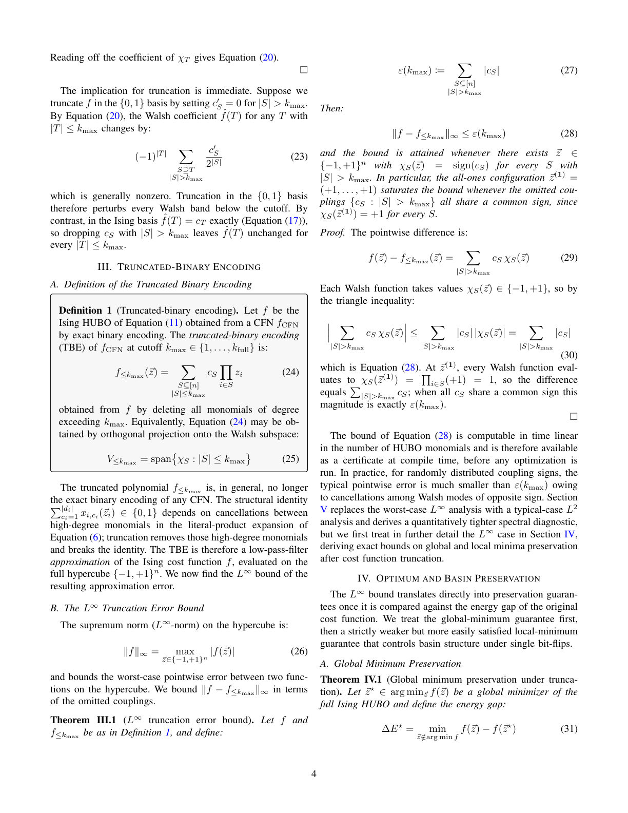
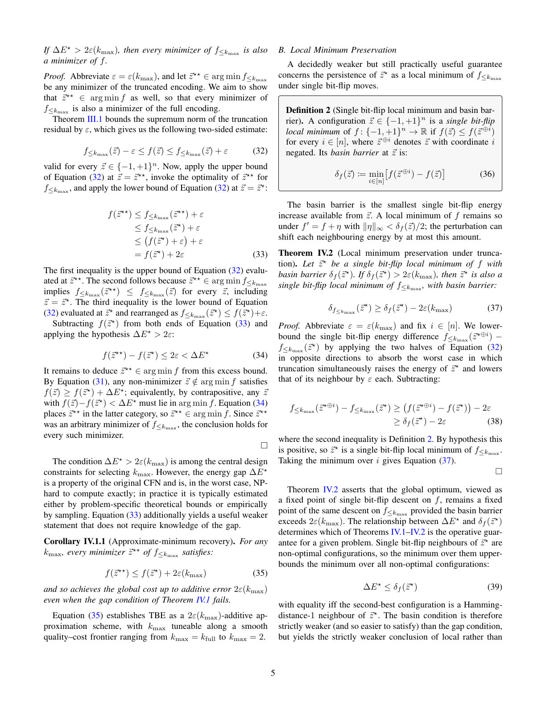
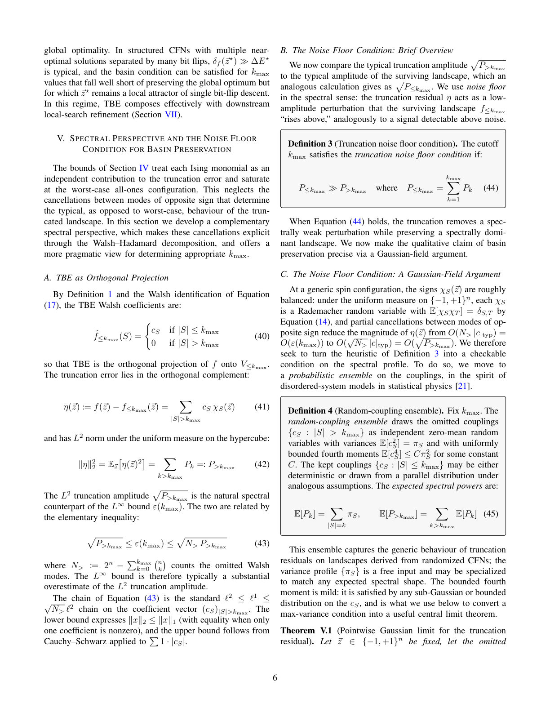
Summary. This paper proposes a new method called Truncated-Binary Encoding to reduce the complexity of optimization problems mapped to quantum hardware. By strategically dropping high-degree interactions in the Ising basis, it minimizes hardware overhead while providing mathematical guarantees that the essential features of the optimization landscape remain intact.
Why it may be interesting. not directly relevant
Main problem. High-order interactions in the encoding of discrete cost functions into Ising models create high-degree monomials that are incompatible with the limited native locality of current quantum annealing and gate-based hardware.
Main result. The paper introduces Truncated-Binary Encoding (TBE), proving that discarding high-degree Ising monomials preserves the global minimum and local minimum structure under specific energy gap and basin barrier conditions.
Method. The author uses Walsh-Hadamard spectral analysis to treat the encoding as a low-pass filter and employs the Lindeberg-Feller Central Limit Theorem to characterize the truncation error as a Gaussian noise floor.
Model / system. The model consists of Cost Function Networks (CFNs) mapped to Ising-basis Higher-Order Unconstrained Binary Optimization (HUBO) problems, specifically targeting quantum annealing and gate-based architectures like QAOA.
Key observables. Truncation error (L-infinity norm), spectral power (P_k), energy gap (Delta E*), and the single bit-flip basin barrier (delta f).
Important parameters / regimes. The truncation cutoff degree (k_max), the maximum monomial degree (k_full), and the smoothness of cost tables (Lipschitz constants).
Assumptions / limitations. The analysis assumes an Ising-basis formulation and relies on a random-coupling ensemble where omitted couplings are treated as independent zero-mean random variables.
Paper structure. The paper begins by defining the problem of high-order interaction overhead, introduces the TBE method, establishes error bounds and preservation conditions for minima, performs a spectral analysis using Walsh transforms, and concludes with a diagnostic workflow for selecting the truncation cutoff.
Exact-binary encoding compiles a discrete cost function network (CFN) into a higher-order unconstrained binary optimization (HUBO) problem whose maximum monomial degree grows with the cardinalities of the underlying CFN variables. Given that quantum optimization hardware generally favours quadratic unconstrained binary optimization or low-degree HUBO Hamiltonians, high-cardinality CFNs therefore incur substantial overhead in the form of circuit depth, or ancilla qubits when degree-reduction techniques are employed. To ameliorate these issues, we propose \textit{truncated-binary encoding} (TBE): a modification of exact-binary encoding in which Ising-basis monomials exceeding a chosen cutoff $k_\text{max}$ are dropped from the encoded cost. We establish a tight $L^\infty$ bound on the truncation error in terms of the omitted couplings, derive sufficient conditions on the energy gap and on the single bit-flip basin barrier under which TBE preserves the global minimum and its local-minimum structure, and characterize a noise floor condition on the spectral profile under which the truncation residual acts as a perturbative correction to the underlying landscape. We then express the encoded coefficients directly as Walsh transforms of the underlying CFN cost tables, and prove a bound under which smoothness of each cost table implies rapid decay of its high-degree Walsh mass. Together these results yield a principled \textit{a priori} criterion for selecting $k_\text{max}$ and for judging whether a given CFN admits a small-$k_\text{max}$ TBE.
Authors: Christian Copetti
Type: theory · Category: strongly correlated electrons · PDF: https://arxiv.org/pdf/2605.16482v1
Analysis basis: full PDF text, analyzed in chunks
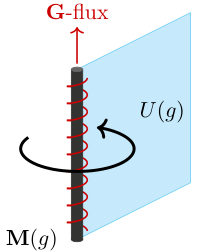
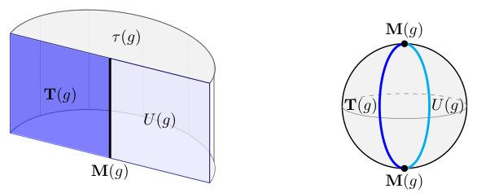
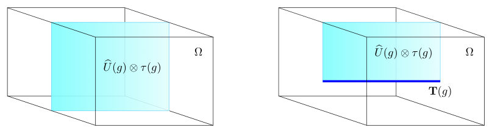
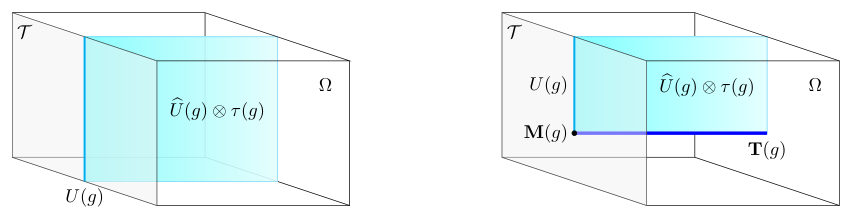
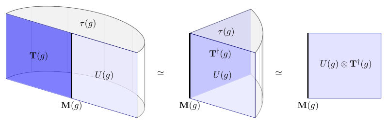
Summary. This paper explores how bulk anomalies dictate the physics of monodromy defects, demonstrating that these defects host protected edge modes and undergo spectral pumping. It provides a unified framework for understanding these defects as domain walls in both gapped SPT phases and gapless anomalous theories.
Why it may be interesting. not directly relevant
Main problem. The paper investigates the properties of monodromy defects, which are codimension-2 defects that terminate topological symmetry operators, specifically focusing on how bulk 't Hooft anomalies impact their physics.
Main result. The author shows that in anomalous gapless theories, monodromy defects are well-defined as domain walls between a symmetry defect and a topological decoration, leading to protected chiral edge modes and adiabatic spectral pumping of gapless degrees of freedom.
Method. The study utilizes the anomaly inflow mechanism, transgression/slant product in group cohomology, radial quantization, and the Symmetry TFT (SymTFT) framework.
Model / system. The paper considers gapped Symmetry Protected Topological (SPT) phases and gapless theories with anomalous global symmetries, including (3+1)d Dirac fermions, (1+1)d compact bosons, and (2+1)d scalar QED.
Key observables. Protected chiral edge modes, spectral flow/pumping of gapless degrees of freedom, and topological invariants like the chiral central charge and Hall response.
Important parameters / regimes. The twist parameter (magnetic flux) $ u$, the symmetry group $G$ and its centralizer $C_G(g)$, and the $ heta$ angle periodicity.
Assumptions / limitations. The analysis of $ heta$ angle periodicity and gravitational corrections is specifically focused on closed $Spin^c$ manifolds.
Figures summary. Figure 1 illustrates the monodromy defect as a dynamical termination of a symmetry operator or as being sourced by magnetic flux; Figure 2 shows the defect as a domain wall between a symmetry defect and a topological decoration.
Paper structure. The paper begins by defining monodromy defects, moves to using topological defects as probes of SPTs, extends these concepts to anomalous gapless theories, and concludes with specific applications to free Dirac fermions and lattice models.
Monodromy defects describe a dynamical termination of topological symmetry operators, and are sourced by a localized background magnetic flux. We study their properties in gapped SPT phases and, by inflow, in gapless theories with an anomalous symmetry. The background flux acts as a source for the anomaly, impacting the definition of the monodromy defect, which can only be defined as a domain wall between the symmetry generator and a topological order induced by the anomaly. The topological dressing has several consequences, such as the presence of protected chiral edge modes on the defect's worldvolume, and the adiabatic pumping of gapless degrees of freedom bound to the localized flux. We verify our predictions in several examples, focusing on monodromy defects for anomalous chiral symmetries, both in the continuum and on the lattice.
Papers from cond-mat.mtrl-sci, mes-hall, other, soft, supr-con. These archives are de-prioritized — they appear at the end regardless of relevance score.
Authors: F. Calloni, R. Satariano, R. Ferraiuolo, H. G. Ahmad, D. Gatta, E. Raja, G. Santo, G. Serpico, R. Vydyasagar, D. Montemurro, N. Poccia, A. Vettoliere, G. Ausanio, C. Granata, L. Parlato, G. P. Pepe, A. Bruno, F. Tafuri, D. Massarotti
Type: both · Category: quantum information and computing · PDF: https://arxiv.org/pdf/2605.18586v1
Analysis basis: full PDF text, analyzed in chunks
Topic relevance: 🔥 QC/QI experiment 4/5 · correlated / nonlocal dissipation 2/5 · spintronics-quantum-optics interface 2/5
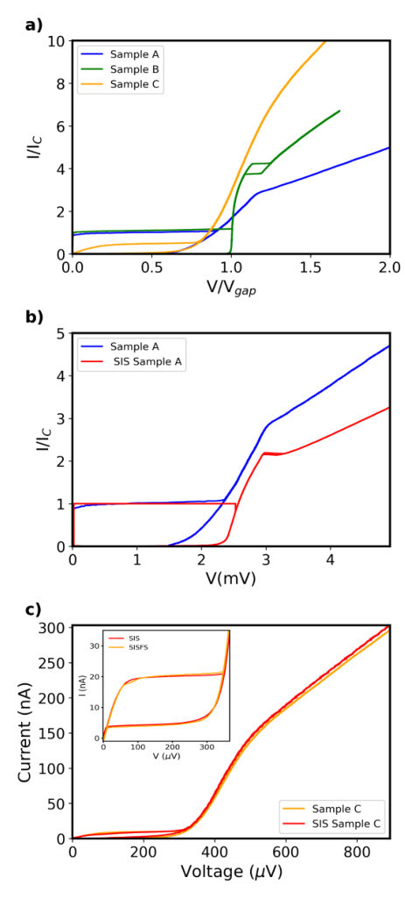
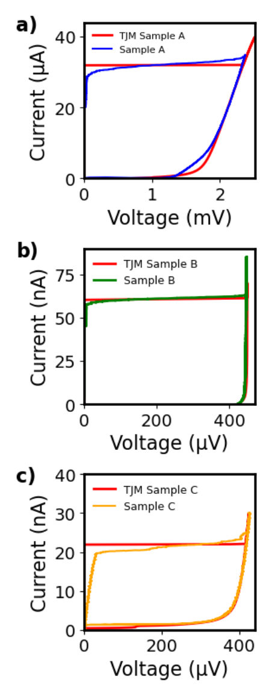
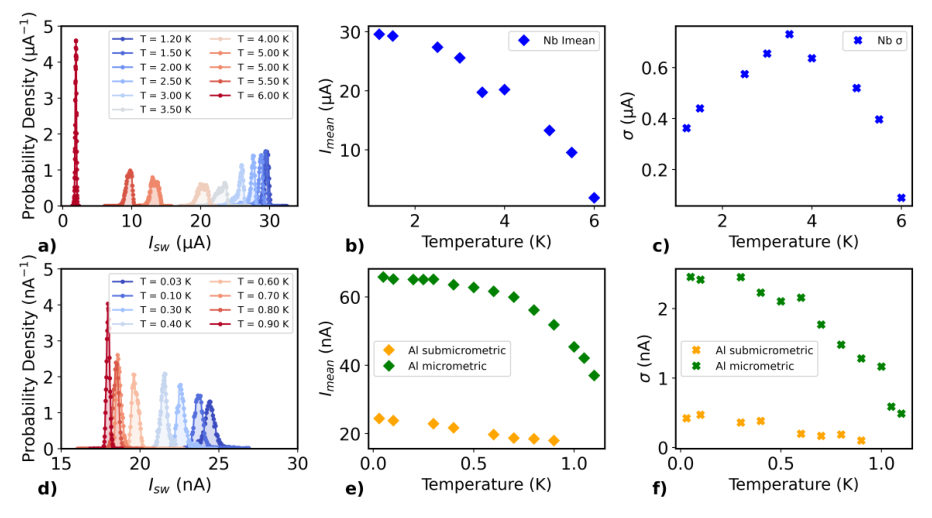
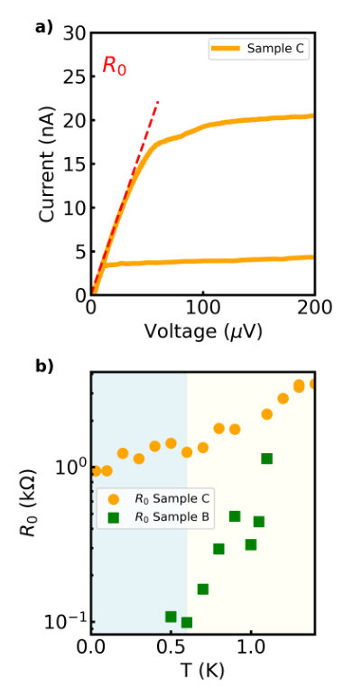
Summary. This paper investigates the electrodynamic properties of tunnel ferromagnetic Josephson junctions. It shows that submicrometric Al-based junctions can achieve quantum phase diffusion regimes similar to transmon qubits, suggesting their viability for future superconducting quantum and classical digital circuits.
Why it may be interesting. The paper explores the transition from thermal activation to quantum phase diffusion and the management of dissipation in hybrid superconducting-magnetic systems, which is highly relevant to the development of high-coherence hybrid quantum architectures.
Main problem. Investigating the phase dynamics, dissipation mechanisms, and scalability of tunnel ferromagnetic Josephson junctions (SIsFS) for potential integration into superconducting quantum and classical circuits.
Main result. The study demonstrates that submicrometric Al-based SIsFS junctions exhibit quantum phase diffusion and properties comparable to state-of-the-art transmons, establishing a robust framework for hybrid ferromagnetic Josephson junctions.
Method. The researchers used transport measurements (I-V characteristics and switching current distributions) and fitted the data using the Tunnel Junction Microscopic (TJM) model and the Bakurskiy model.
Model / system. The physical system consists of SIsFS (Superconductor-Insulator-thin superconductor-Ferromagnet-Superbolconductor) multilayer junctions, specifically Nb-based and Al-based devices with varying dimensions and ferromagnetic interlayers.
Key observables. Critical current (Ic), gap voltage (Vgap), IcRN product, switching current probability density distribution P(I), and quality factors (Q0, Q1).
Important parameters / regimes. Josephson energy (Ej), charging energy (Ec), Ej/Ec ratio, thermal activation, macroscopic quantum tunneling (MQT), and quantum phase diffusion regimes.
Assumptions / limitations. The analysis assumes the validity of the Tunnel Junction Microscopic model and the Bakurskiy model for describing the series combination of SIs and sFS junctions.
Figures summary. Figure 1 shows normalized I-V characteristics for different samples and compares SIsFS junctions to non-magnetic SIS counterparts; Figure 3 shows temperature-dependent switching current distributions and mean switching current for Nb-based samples.
Paper structure. The paper introduces the SIsFS architecture, details the fabrication and experimental platform, presents transport measurements and modeling results for different material systems, and concludes with the implications for quantum and classical circuit integration.
We investigate tunnel ferromagnetic Josephson junctions based on Superconductor-Insulator-thin superconductor-Ferromagnet-Superconductor multilayers. A comparative study of their electrodynamic properties is performed for junctions with niobium and aluminum (Al) electrodes, featuring different ferromagnetic interlayer materials and lateral dimensions ranging from the micrometric to the submicrometric scale. The parameters extracted from the fitting of the current-voltage characteristics using the tunnel junction microscopic model are found to be consistent with those independently estimated from switching current distribution measurements. Submicrometric Al-based devices exhibit electrodynamic properties comparable to those implemented in state-of-the-art transmon qubits and display clear signatures of quantum phase diffusion. The strong agreement between transport modelling and escape dynamics establishes a robust framework for describing hybrid ferromagnetic Josephson junctions consistent with their energy scales and supports their potential integration into superconducting quantum and classical digital circuits.
Authors: Bohdan Dobosh, Alexander Yakimenko
Type: theory · Category: statistical mechanics · PDF: https://arxiv.org/pdf/2605.17627v1
Analysis basis: full PDF text, analyzed in chunks
Topic relevance: non-equilibrium dynamics 3/5 · driven-dissipative phase transition 2/5 · non-equilibrium universality 2/5
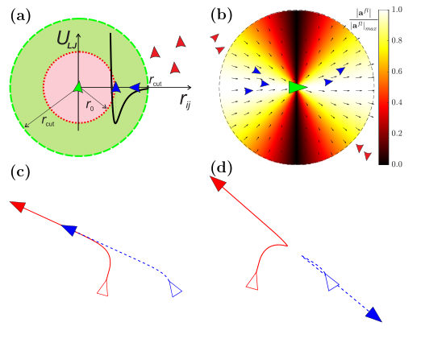
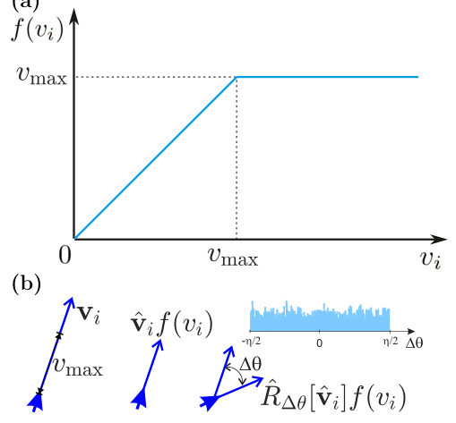
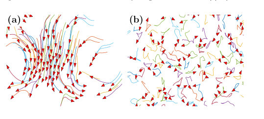
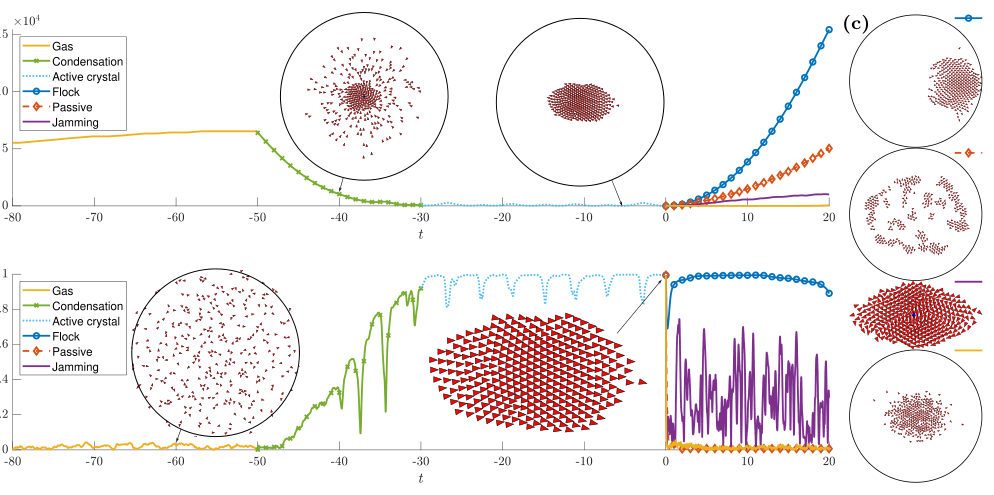
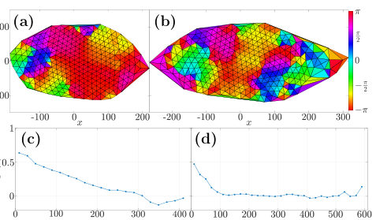
Summary. This paper presents a microscopic model of active matter where alignment depends on the orientation of neighboring particles. It shows that this simple rule can lead to complex behaviors ranging from disordered gases to highly ordered, oscillating clusters.
Why it may be interesting. The study explores how local, anisotropic, and velocity-dependent rules drive phase transitions and emergent collective behaviors, which is highly relevant to understanding non-equilibrium phase transitions and driven many-body dynamics.
Main problem. Investigating how a simple, local, orientation-weighted alignment rule can generate a diverse range of nonequilibrium collective dynamics, such as flocking, jamming, and clustering.
Main result. The model demonstrates that a single microscopic rule can produce a broad spectrum of states, including coherent flocking, active gases, and dense ordered clusters that exhibit periodic collective reversals.
Method. Direct numerical simulations of an agent-based model using the velocity Verlet integration algorithm.
Model / system. An agent-based model of N self-propelled particles in a 2D arena, featuring a Lennard-Jones-type potential for short-range interactions and a velocity-dependent, orientation-weighted alignment rule.
Key observables. Polar order parameter, Mean Squared Displacement (MSD), sixfold orientational order parameter, and orientational correlation function.
Important parameters / regimes. Alignment strength (A), target strength (C), Lennard-Jones interaction strength (Up), and maximum speed (vmax).
Assumptions / limitations. The alignment rule is local and anisotropic; speed is regulated by a saturation rule to prevent unbounded acceleration.
Figures summary. Fig 1 shows the interaction potentials and the force field of a single agent; Fig 2 illustrates speed truncation and velocity rescaling; Fig 3 compares flocking and active gas regimes; Fig 4 shows system evolution after target removal; Fig 5 displays structural order parameters.
Paper structure. The paper introduces the microscopic alignment rule and model components, explores different dynamical regimes by tuning alignment strength, investigates the effect of localized target forcing, and tests the robustness of these states against noise and perturbations.
We study an agent-based model of self-propelled particles with a velocity-dependent alignment rule. This interaction is orientation weighted and acts along the line connecting neighboring particles. Tuning the alignment strength produces several distinct collective regimes, including disordered gas-like motion, coherent flocking, jammed high-density states, and densely ordered moving clusters with active-crystal-like behavior. These results show that a simple local alignment rule can generate a broad range of nonequilibrium collective dynamics within a single microscopic model.
Authors: Eckhard Krotscheck
Type: theory · Category: other · PDF: https://arxiv.org/pdf/2605.17069v1
Analysis basis: full PDF text, analyzed in chunks
Topic relevance: Keldysh / 2PI / non-Gaussian methods 3/5 · Kondo & dissipative impurity 2/5 · non-equilibrium dynamics 2/5
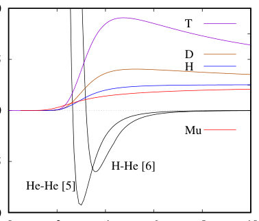
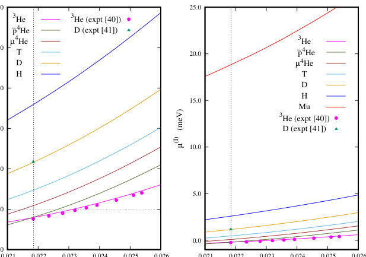
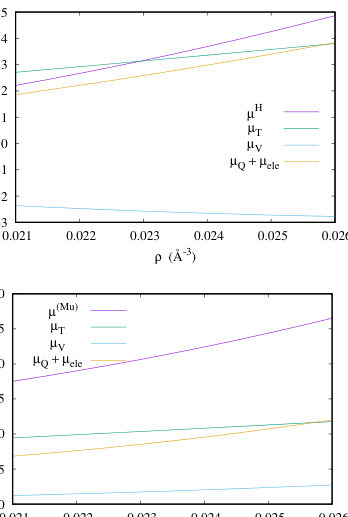
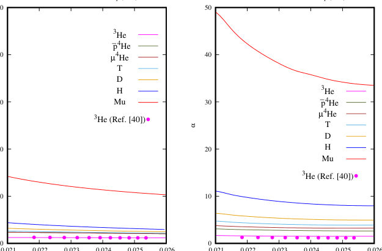
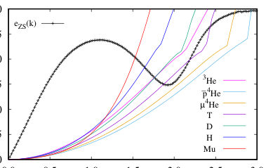
Summary. This paper develops a microscopic theory to study how different atomic impurities move through superfluid helium-4. It specifically highlights how the large zero-point motion of light particles like muonium leads to massive increases in effective mass and unique dispersion relations.
Why it may be interesting. It provides a sophisticated microscopic framework for understanding how a light impurity couples to the collective excitations (phonons/rotons) of a quantum fluid, which is highly relevant to many-body dynamics and impurity physics.
Main problem. The study aims to develop a Dynamic Many-Body Theory to describe the dynamics, energetics, and effective mass of various atomic impurities (such as muonium, antiprotonic helium, and hydrogen isotopes) embedded in a superfluid 4He host.
Main result. The theory predicts extreme mass enhancement for muonium (m*/m > 100) due to large zero-point motion and shows that the dispersion relations for muonic and antiprotonic helium pass under the roton minimum.
Method. The authors use a microscopic many-body approach based on the Jastrow-Feenberg ansatz, the Hypernetted chain (HNC)/Euler-Lagrange method, and a time-dependent generalization of the variational principle to derive impurity self-energy.
Model / system. A single atomic impurity (Mu, p-bar, H, D, T, or 3He) immersed in a bulk 4He quantum liquid, modeled with Aziz-type He-He potentials and impurity-host potentials characterized by a strong repulsive core.
Key observables. Chemical potential, effective mass, dispersion relations, impurity self-energy, pair distribution function, and particle lifetime.
Important parameters / regimes. deBoer parameter (quantumness), reduced mass, scattering length, and the phonon-roton spectrum of the host liquid.
Assumptions / limitations. The theory utilizes the G0W approximation for dispersion relations and a three-phonon vertex approximation to preserve long-wavelength properties; the Feynman approximation for the host spectrum is noted to be a factor of 2 too high.
Figures summary. Figure 1 shows interaction potentials and scattering wave functions; Figure 2 compares chemical potentials vs density; Figure 7 shows effective mass vs density; Figure 8 compares dispersion relations; Figure 9 shows self-energy and particle lifetime; Figure 10 shows the imaginary part of the self-energy.
Paper structure. The paper introduces the motivation regarding muonium experiments, defines the many-body Hamiltonian and variational framework, details the derivation of the Dynamic Many-Body Theory, presents results for static properties (chemical potential), and concludes with dynamic properties (effective mass and damping).
We implement manifestly microscopic many-body methods to study the dynamics of atomic impurities in a host quantum fluid, specifically $^4$He. Our investigations are motivated by experiments of muonium atoms within $^4$He with the goal of testing the universality of free fall by neutral bound states using unstable particles. Structure calculations are performed using standard semi-analytic methods; we extend here the calculations of our previos work (Journal of Low Temperature Physics {\bf 93}, 415-449 (1993)) to muonic \he4, antiprotonic \he4 and mounium atoms within \he4. We find that the muonium impurity probes, due to its large zero-point motion, the atomic interaction at rather short distances. Its chemical potential is estimated to be about 19 meV. Antiprotonic \he4 has, on the other hand, a negative chemical potential. Dynamics is treated by making all correlation functions time-dependent. In analogy to the derivation of the dynamics of the background liquid, we derive a working formula for the impurity self-energy that includes the most relevant physical effects. Results for the effective mass of \he3 and hydrogen atoms agree well with available experiments. The dispersion relations of muonic \he4 and antiprotonic \he4 pass through under the roton minimum.
Authors: Mauro Antezza
Type: theory · Category: statistical mechanics · PDF: https://arxiv.org/pdf/2605.18322v1
Analysis basis: full PDF text, analyzed in chunks
Topic relevance: non-equilibrium dynamics 3/5 · correlated / nonlocal dissipation 2/5 · driven-dissipative phase transition 2/5

Summary. The paper introduces a way to control near-field radiative heat transfer by rapidly modulating parameters like the vacuum gap. This process creates a thermal version of the Kapitza mechanism, allowing for predictable temperature shifts and the ability to stabilize thermal states. The predicted effects are large enough to be measured with current experimental technology.
Why it may be interesting. The paper presents a fundamental way to control non-equilibrium thermal dynamics and stability through parametric driving, which is highly relevant to the control of open quantum systems and heat transport in nanophotonic platforms.
Main problem. Investigating how rapid periodic modulation of a parameter controlling near-field radiative heat transfer (NFRHT) affects the slow thermal dynamics and stability of a system.
Main result. The study establishes a thermal analogue of the Kapitza mechanism, showing that fast modulation produces a quadratic, time-averaged temperature shift and a modified effective thermal conductance consisting of static and dynamic terms.
Method. A two-scale analysis and Kapitza-type averaging method are used to decompose temperature into slow and fast components and expand the radiative flux to second order in modulation amplitude.
Model / system. A lumped-body thermal model consisting of two bodies (e.g., SiC slabs) separated by a vacuum gap, where heat transfer occurs via photon tunneling (evanescent fields) and a background conductive channel.
Key observables. Steady-state temperature shift (delta T*), effective thermal conductance (G_eff), and the frequency-dependent temperature ripple.
Important parameters / regimes. Modulation frequency (Omega), modulation amplitude (a), vacuum gap distance (d), and the ratio of modulation frequency to thermal relaxation rate (Omega vs G/C).
Assumptions / limitations. Small modulation amplitude, clear separation of timescales between modulation and thermal relaxation, and electromagnetic quasi-instantaneity.
Figures summary. Figure 2 shows the static and dynamic Kapitza corrections and temperature shifts as functions of modulation frequency and gap distance, alongside unmodulated temperature comparisons.
Paper structure. The paper introduces the thermal Kapitza mechanism, defines the physical model and governing thermal balance equations, applies two-scale averaging to derive slow dynamics, applies the theory to SiC slabs to predict measurable shifts, and discusses stability and future applications.
We introduce a Kapitza-like mechanism for the near-field radiative heat transfer and show that fast modulation of any parameter controlling the flux, such as the vacuum gap or a material response, produces a quadratic, time-averaged correction in the slow thermal dynamics. This correction splits into a frequency-independent static term and a low-pass dynamical term, yielding sizable modulation-induced temperature shifts and modified effective thermal conductances that can stabilize or destabilize the steady state. Applying the theory to gap modulation between SiC slabs, we derive analytical scaling laws and predict temperature shifts that are fully measurable with existing experimental platforms, requiring only readily accessible low modulation frequencies of order $Ω\approx 10^4~\mathrm{rad/s}$. Our results establish a thermal analogue of the Kapitza mechanism and provide a general route for controlling radiative heat flow in micro- and nanoscale platforms.
Authors: Gabriel Gonzalez
Type: theory · Category: other · PDF: https://arxiv.org/pdf/2605.16635v1
Analysis basis: full PDF text, analyzed in chunks
Topic relevance: non-equilibrium dynamics 3/5 · Kondo & dissipative impurity 2/5
Summary. This paper shows that an AC-driven gate voltage in a single molecule magnet transistor can be used to detect Berry-phase interference through conductance oscillations. This method is significant because it allows for the observation of these quantum interference effects using unpolarized leads.
Why it may be interesting. not directly relevant
Main problem. Investigating how a time-periodic gate voltage and a transverse magnetic field induce Berry-phase interference in the electron transport through a single molecule magnet transistor.
Main result. The study demonstrates that the AC-driven potential creates zero transmission resonances that oscillate with the transverse magnetic field due to Berry-phase interference, and that these oscillations can be detected using unpolarized leads.
Method. The authors combine Floquet theory to handle the time-periodic potential with the Landauer formalism to calculate conductance and transmission probability.
Model / system. A single molecule magnet (SMM) transistor connected to two leads, modeled using a one-dimensional tight-binding chain and the Giant Spin Approximation (GSA) for the SMM spin tunneling.
Key observables. Electron transmission probability, conductance, and zero transmission resonances.
Important parameters / regimes. Transverse magnetic field (Bx), gate voltage amplitude (Vg), driving frequency (omega), anisotropy constants (Kz, K), and coupling strength (beta).
Assumptions / limitations. The system is in the strong Coulomb regime where only uncharged or singly charged states are considered, and the exchange coupling is highly anisotropic (J_perp = 0).
Figures summary. Fig 1 shows the device setup; Fig 2 displays oscillations of zero transmission resonances; Fig 3 plots transmission probability vs electron energy; Figs 4 and 5 show conductance oscillations as a function of the transverse magnetic field.
Paper structure. The paper begins with the system setup and Hamiltonian definition, moves to the Floquet-Landauer transport formalism, presents analytical and numerical results for transmission and conductance, and concludes with the discussion of Berry-phase detection.
We consider the electron transport through a single molecule magnet transistor in the presence of a local transverse magnetic field and ac-driven gate voltage. We calculate the conductance as a function of the electron energy and transverse magnetic field by using the Floquet and Landauer formalism. We show that the time periodic potential causes zero transmission resonances that oscillate as a function of the transverse magnetic field due to the Berry phase interference associated with two quantum tunneling paths. We find that these Berry phase oscillations can be detected in the conductance as a function of the transverse magnetic field for an incoming electron with a specific energy.
Authors: Konrad J. Kapcia, Victor Tkachenko, Flavio Capotondi, Alexander Lichtenstein, Serguei Molodtsov, Przemysław Piekarz, Beata Ziaja
Type: theory · Category: strongly correlated electrons · PDF: https://arxiv.org/pdf/2605.18638v1
Analysis basis: full PDF text, analyzed in chunks
Topic relevance: non-equilibrium dynamics 3/5
Summary. This theoretical study demonstrates that demagnetization in Co and Ni occurs in less than 100 femtoseconds due to electronic redistribution in the 3d band. The mechanism is shown to be universal across optical and X-ray regimes, provided the photon energy is sufficient to excite the electronic system. These findings are critical for developing next-generation ultrafast magnetic storage and switching technologies.
Why it may be interesting. The study explores non-equilibrium dynamics and the relaxation of highly excited electronic systems, which is relevant to understanding how ultrafast energy deposition drives transient changes in many-body electronic states.
Main problem. Identifying the specific physical processes that trigger ultrafast (sub-100 fs) radiation-induced demagnetization in magnetic materials across optical to X-ray photon energies.
Main result. Sub-100-fs demagnetization is driven by electronic excitation and subsequent electron redistribution within the 3d band, a mechanism that remains universal across different photon energies.
Method. The study uses the XSPIN simulation code, which combines VASP-calculated electronic structures with a Monte Carlo approach for high-energy electrons and a transient Fermi-Dirac distribution for low-energy electrons.
Model / system. The system consists of single magnetic domains of bulk fcc Nickel (Ni) and Cobalt (Co) under strongly non-equilibrium conditions following femtosecond light pulses.
Key observables. Spin-resolved number of deep-shell holes, spin-resolved number of low-energy electrons (below 15 eV), transient electronic temperature, and normalized magnetization (m/m0).
Important parameters / regimes. Photon energies from 2 eV to 10,000 eV; pulse durations of 2 fs and 7/0 fs FWHM; absorbed dose of 0.93 eV/atom.
Assumptions / limitations. The band structure remains static (no nuclei movement); phonon-mediated processes and inter-site Heisenberg exchange are negligible on these timescales; the electronic temperature and chemical potential are common for both spin populations.
Figures summary. Figure 1 compares Co under 2 eV and 1000 eV irradiation, showing the evolution of spin-resolved holes, low-energy electrons, electronic temperature, and normalized magnetization.
Paper structure. The paper introduces the problem of ultrafast demagnetization, describes the XSPIN modeling framework and electronic structure calculations, presents results for various photon energies and pulse durations, and discusses the implications of electron cascading and experimental convolution effects.
A quantitative understanding of the processes that trigger light-induced demagnetization on ultrashort timescales is crucial for achieving an ultrafast, radiation-controlled magnetic response in materials. This milestone is essential for developing next-generation magnetic storage devices and ultrafast magnetic switches. In this theoretical study, we investigated demagnetization triggered in a single magnetic domain by light pulses ranging from a few to a few tens of femtoseconds in duration, with photon energies spanning the optical and X-ray regimes, under strongly non-equilibrium conditions. We predicted a loss of magnetization in the sub-100-fs range in all cases, primarily due to the excitation of the electronic system and the subsequent redistribution of electrons within the magneto-sensitive band. The considered timescales were too short for phonon-mediated processes or inter-site Heisenberg exchange processes to contribute significantly. These findings pave the way for highly accurate, radiation-driven magnetization control in magnetic materials at sub-100-femtosecond timescales with potential practical applications.
Authors: Gleb S. Seleznev, Yakov V. Fominov
Type: theory · Category: disordered systems and neural networks · PDF: https://arxiv.org/pdf/2605.17408v1
Analysis basis: full PDF text, analyzed in chunks
Topic relevance: Keldysh / 2PI / non-Gaussian methods 2/5 · Kondo & dissipative impurity 2/5
Summary. This paper extends the theory of superconductivity in disordered films to show how a parallel magnetic field can enhance superconductivity by polarizing magnetic impurities. By reducing spin-flip scattering, the field can increase the critical temperature, increase the upper critical field, and even restore superconductivity in previously normal films.
Why it may be interesting. not directly relevant
Main problem. The paper aims to extend the Kharitonov and Feigelman (KF) theory to explain recent experimental observations of superconductivity enhancement, specifically addressing the enhancement of the perpendicular upper critical field and the suppression of the London penetration depth by a parallel magnetic field.
Main result. The authors theoretically demonstrate that a parallel magnetic field suppresses the London penetration depth and enhances the perpendicular upper critical field by polarizing magnetic impurities and reducing the effective exchange scattering rate. They also predict a gapless-to-gapped transition and the possibility of field-induced superconductivity restoration.
Method. The study utilizes Gor'kov's diagrammatic technique for dirty superconductors within the Matsubara representation, employing the self-consistent Born approximation and Dyson's equation to derive superconducting observables.
Model / system. The system consists of dirty (disordered) superconducting thin films containing potential, spin-orbit, and magnetic impurities. The model uses a Bogoliubov-de Gennes Hamiltonian that accounts for orbital and paramagnetic effects from external magnetic fields.
Key observables. Critical temperature (Tc), superconducting order parameter (Delta), superfluid density (nsc), London penetration depth (lambda_L), perpendicular upper critical field (Hc2_perp), and spectral gap (Eg).
Important parameters / regimes. Exchange scattering rates (nu_s, nu_inf), spin-orbit scattering rate (nu_so), magnetic field components (h_parallel, h_perp), impurity spin (S), and film thickness (d).
Assumptions / limitations. The films are in the dirty limit; the model assumes strong spin-orbit scattering to suppress paramagnetic effects; the Kondo effect is neglected (T > TK); and impurities are assumed to be independent and uniformly distributed.
Figures summary. Figure 1 shows a schematic of a disordered film with different impurity types; Figure 2 displays self-energy diagrams for various scattering processes; Figure 4 shows numerical plots of nonmonotonic Tc, nsc, and Hc2_perp; Figure 5 compares theoretical curves with experimental data for Tc, Hc2_perp, and lambda_L.
Paper structure. The paper begins with the formulation of the Hamiltonian and the physical model, followed by the development of the theoretical framework using Gor'kov's technique. It then explores specific limits (unpolarized and fully polarized), analyzes the gapless-to-gapped transition, and concludes with numerical results and comparison to experimental data.
Dirty superconducting films with magnetic impurities can exhibit nontrivial behavior in a magnetic field that polarizes the impurity spins. As predicted by Kharitonov and Feigelman (KF) [JETP Lett. 82, 421 (2005)], this polarization reduces the exchange scattering rate. Consequently, a parallel magnetic field can enhance the critical temperature $T_c$ when magnetic-field pair breaking is weak, as realized for strong spin-orbit scattering and small film thickness. Recently, Llanos et al. [Nat. Phys. (2026)] observed a pronounced enhancement of $T_c$ consistent with the KF theory. The same experiment also reported an enhancement of the perpendicular upper critical field $H_{c2}^{\perp}$ and a suppression of the London penetration depth $λ_L$ by a parallel magnetic field. These quantities were not considered in the original KF theory. To address this gap, we develop a theoretical framework based on Gor'kov's diagrammatic technique for dirty superconductors. We extend the KF theory in two experimentally relevant directions: (i) to arbitrary temperatures $T
Authors: Liam Bonds, Shiang-Bin Chiu, Anton Andreev, Boris Spivak
Type: theory · Category: other · PDF: https://arxiv.org/pdf/2605.17667v1
Analysis basis: full PDF text, analyzed in chunks
Topic relevance: Keldysh / 2PI / non-Gaussian methods 2/5 · non-equilibrium dynamics 2/5
Summary. The paper provides a theoretical description of SNS junctions where the normal metal has multiple conduction band valleys. It predicts that the separation of different relaxation time scales leads to unique nonmonotonic current peaks and highly nonlinear resistance.
Why it may be interesting. not directly relevant
Main problem. Investigating how a hierarchy of relaxation time scales (intra-valley, inter-valley, and inelastic) affects the I-V characteristics of SNS junctions with a multivalley normal region.
Main result. The I-V characteristic is nonmonotonic, exhibiting two current peaks at voltages corresponding to the inter-valley and inelastic relaxation rates, and showing a sharp voltage jump in current-biased regimes.
Method. Generalization of the Larkin-Ovchinnikov equations using the Keldysh-Gor'kov-Nambu formalism, Usadel equations, and a zero-dimensional approximation for the junction.
Model / system. SNS (Superconductor-Normal-Superconductor) junctions where the normal region is a diffusive multivalley conductor, such as n-doped silicon or germanium.
Key observables. Current-voltage (I-V) characteristics, current peaks (I_max), critical current (I_c), and nonlinear resistance.
Important parameters / regimes. Relaxation time hierarchy (tau, tau_v, tau_in), Thouless energy (E_T), and voltage scales (V1, V2).
Assumptions / limitations. Diffusive regime, adiabatic approximation for slowly varying order parameters, and a zero-dimensional approximation for the low-bias regime.
Figures summary. Figure 1 shows a sketch of a multivalley SNS junction with scattering processes; Figure 2 plots average current vs. bias voltage; Figure 3 shows the I-V characteristic with a distinction between low-bias and high-bias regimes.
Paper structure. The paper introduces the physical problem, develops a generalized kinetic framework for multivalley systems, analyzes voltage-biased junctions to find current peaks, and then investigates current-biased junctions to identify the voltage jump regime.
In multivalley conductors the inter-valley relaxation time $τ_v$ and the inelastic relaxation time $τ_{in}$ may be significantly longer than the intra-valley momentum relaxation time $τ$. We show that this separation of time scales has dramatic effects on the I-V characteristics of SNS junctions with a multivalley normal region. We generalize the Larkin-Ovchinnikov equations describing superconducting kinetics to the case of multivalley superconductors. We use this generalization to obtain a kinetic description of multivalley SNS junctions. We find that at constant voltage bias $V$, the current $I(V)$ is nonmonotonic; it exhibits two peaks of similar magnitude $I_\text{max,1} \sim I_\text{max,2}$ at $V_1 \sim \hbar(eτ_{in})^{-1}$ and $V_2\sim \hbar(eτ_v)^{-1}$, which may greatly exceed the critical current $I_c(T)$. At constant current bias $I$ we find that in a wide interval, $I_c(T) < I \lesssim I_{\text{jump}}$, the nonlinear resistance of the junction is controlled by the long relaxation times and may be several orders of magnitude smaller than the normal state resistance.
Authors: Subhadip Santra, Ritwik Mondal, Marco Berritta, Peter M. Oppeneer
Type: theory · Category: other · PDF: https://arxiv.org/pdf/2605.16830v1
Analysis basis: full PDF text, analyzed in chunks
Topic relevance: non-equilibrium dynamics 2/5 · spintronics-quantum-optics interface 2/5
Summary. This paper provides a relativistic theoretical framework to describe how spin and orbital angular momentum interact and redistribute in magnetic materials. It highlights how the choice of exchange-interaction model (general vs. atomistic) fundamentally changes the predicted conservation laws for total angular momentum during ultrafast processes.
Why it may be interesting. not directly relevant
Main problem. The paper seeks to develop a complete relativistic theory for the coupled dynamics of spin and orbital angular momentum in magnetic systems, specifically addressing the conservation or non-conservation of total angular momentum under external electromagnetic fields.
Main result. The authors show that while total angular momentum (J) is conserved in the absence of a spin-polarized exchange field, it is not conserved under external electromagnetic fields (like laser pulses); however, under an atomistic Heisenberg approximation, J remains conserved even with external fields.
Method. The study employs a relativistic framework starting from the Dirac-Kohn-Sham Hamiltonian, applying a Foldy-Wouthuysen unitary transformation to derive an extended Pauli Hamiltonian and using Heisenberg equations of motion to derive angular momentum dynamics.
Model / system. The system consists of electrons in magnetic and nonmagnetic materials (including ferromagnets and alloys) subjected to external electromagnetic fields, modeled using the Dirac-Kohn-Sham and extended Pauli Hamiltonians.
Key observables. Spin angular momentum (S), orbital angular momentum (L), and total angular momentum (J = S + L).
Important parameters / regimes. Relativistic corrections (1/c^2 order), electromagnetic field strength (E and B fields), spin-polarized Kohn-Sham exchange field (Bxc), and ultrafast/femtosecond timescales.
Assumptions / limitations. The derivation relies on a semirelativistic 1/c^2 expansion, a weak-field approximation, and compares results between a general Kohn-Sham exchange field and an atomistic Heisenberg approximation.
Paper structure. The paper begins with the derivation of the relativistic Hamiltonian via unitary transformation, proceeds to analyze the dynamics of L and S in nonmagnetic and magnetic systems, investigates conservation laws under external fields, and concludes with a comparison between general exchange and atomistic Heisenberg models.
We develop a complete relativistic theory to describe the dynamics of electronic angular momentum including both spin (S) and orbital (L) contributions in magnetic systems. We start with the relativistic Dirac-Kohn-Sham Hamiltonian under the influence of an electromagnetic field and apply a unitary transformation to formulate the extended Pauli Hamiltonian. Using the transformed semirelativistic Hamiltonian, we derive the angular momentum dynamics for the orbital and spin angular momenta. Thereby, we formulate the coupled dynamics of orbital and spin moments consistent with the relativistic Dirac framework. Considering especially the conservation of the total angular momentum, J = S +L, we show first that J is conserved in the absence of a spin-polarized Kohn-Sham exchange field, but is no longer conserved under the application of an electromagnetic field, e.g., laser pulse, THz field, etc. Second, considering magnetic systems with atomic spin and orbital momenta, we derive the coupled equations of motion of angular momenta dynamics whilst making the atomistic Heisenberg approximation for the exchange interaction. Our results suggest that, under these assumptions, the total angular momentum remains conserved, even with electromagnetic field, but atomic spin and orbital angular momenta individually are not conserved.
Authors: Marco Bertola, Deng-Shan Wang, Peng Yan, Dinghao Zhu
Type: theory · Category: quantum gases · PDF: https://arxiv.org/pdf/2605.18651v1
Analysis basis: full PDF text, analyzed in chunks
Topic relevance: non-equilibrium dynamics 2/5
Summary. This paper introduces and analyzes the dynamics of dark soliton gases with arbitrary genus in the defocusing nonlinear Schrödinger equation. It establishes how these complex soliton ensembles evolve over time, passing through various modulated and unmodulated states. The results are supported by rigorous Riemann-Hilbert analysis and numerical simulations.
Why it may be interesting. This work provides a rigorous mathematical foundation for understanding complex, interacting ensembles of solitons in many-body systems like BECs, specifically describing how higher-order structures decay into simpler planar or modulated regimes.
Main problem. The paper investigates the construction and asymptotic behavior of arbitrary-genus dark soliton gases within the defocusing nonlinear Schrödinger (dNLS) hydrodynamics.
Main result. The authors successfully derive the long-time evolution and large-space asymptotics of higher-genus dark soliton gases, demonstrating a cascade of behaviors through modulated and unmodulated regions.
Method. The study employs the Deift-Zhou nonlinear steepest descent approach, Riemann-Hilbert Problem (RHP) framework, Whitham modulation theory, and the g-function approach via a variational formulation.
Model / system. The system is the defocusing nonlinear Schrödinger (dHS) equation, which describes physical contexts such as Bose-Einstein condensates (Gross-Pitaevskii equation) and electromagnetic wave envelopes in defocusing optical media.
Key observables. The amplitude/density of the dark soliton gas potential |q(x, t)|^2 and the phase functions of the soliton gas.
Important parameters / regimes. The self-similar variable xi = x/t, the genus N of the soliton gas, the velocity v of solitons, and the spectral parameters (eigenvalues) on the unit circle.
Assumptions / limitations. The analysis assumes the system is integrable and follows the defocusing nonlinear Schrödinger hydrodynamic model with finite density boundary conditions.
Figures summary. Figures include a qualitative map of the x-t evolution plane, numerical simulations of N=1 and N=2 cases, a visualization of the band-gap conversion mechanism, and snapshots of the soliton gas zero level sets.
Paper structure. The paper proceeds from the construction of the arbitrary-genus potential via an N-to-infinity limit, followed by the analysis of large-space asymptotics, the derivation of long-time evolution using RHP and Whitham theory, and finally numerical validation.
The defocusing nonlinear Schrödinger hydrodynamics supports exact dark solitons under finite density boundary conditions. However, the dark soliton gas, an interacting ensemble of dark solitons, has not yet been studied. In this work, we introduce an arbitrary-genus potential of dark soliton gases by considering the limit of the $\mathcal{N}$-dark soliton as $\mathcal{N}\to \infty$. The large-space asymptotics and long-time evolution of this dark soliton gas potential are analytically investigated through Deift-Zhou nonlinear steepest descent approach. The genus-$N$ dark soliton gas potential approaches the genus-$N$ finite-gap solution as $x \to -\infty$ and the background $1$ as $x \to +\infty$. In the long-time evolution, as the self-similar variable $ξ=x/t$ increases, the gas configuration exhibits a cascade of behaviours, passing from unmodulated and modulated genus-$N$ regions and progressively reducing the genus down to the planar region (unmodulated genus-$0$ region). Notably, the evolution of lower-genus soliton gases can be embedded within that of higher-genus gases, exhibiting identical dynamics within specific regimes. This phenomenon is encoded by the underlying spectra. We also include numerical validations, in perfect agreement with the theoretical predictions.
Authors: Yuta Yamane, Jotaro J. Nakane, Yasufumi Araki, Jun'ichi Ieda
Type: theory · Category: other · PDF: https://arxiv.org/pdf/2605.16778v1
Analysis basis: full PDF text, analyzed in chunks
Topic relevance: non-equilibrium dynamics 2/5
Summary. This paper provides a theoretical framework to understand how moving domain walls in antiferromagnets create electrical impedance. It reveals that a unique mechanism involving the tilting of sublattices contributes to this impedance, offering a way to tune electrical responses in future antiferromagnetic spintronic devices.
Why it may be interesting. not directly relevant
Main problem. The study investigates the origin and nature of emergent impedance in antiferromagnets induced by the dynamics of domain walls under AC currents.
Main result. The authors identify two distinct mechanisms for emergent impedance: one from the translational motion of the domain wall (similar to spiral magnets) and a unique contribution from the time-dependent canting of sublattice magnetizations, which is inversely proportional to the AFM exchange coupling.
Method. The researchers use a perturbation expansion of the coupled Landau-Lifshitz-Gilbert (LLG) equations up to the first order of the inverse AFM exchange coupling and apply an AC current density to derive analytical expressions for the complex impedance.
Model / system. The model consists of an antiferromagnetic metal with two sublattices (A and B) and equal saturation magnetization, described by a 4x4 one-body Hamiltonian for conduction electrons and coupled LLG equations for the Néel and canting vectors.
Key observables. Emergent impedance (Z_omega), spinmotive force (SMF), emergent electric field, and the canting moment.
Important parameters / regimes. AFM exchange coupling (omega_E), spin-transfer torque (STT) coefficients (u, beta), pinning potential frequency (omega_pin), and Gilbert damping (alpha).
Assumptions / limitations. Assumes spatial uniformity in the yz plane (1D walls), small Gilbert damping, and the limit where AFM exchange is dominant (|n| approx 1 and |m| much less than 1).
Figures summary. Figure 1 shows a schematic of the model system with a driven domain wall; Figure 2 illustrates the two coupled DW modes (translational and canting).
Paper structure. The paper introduces the problem of emergent impedance, develops a theoretical formalism using LLG equations and perturbation theory, identifies the two competing dynamical mechanisms, analyzes the frequency-dependent impedance regimes, and concludes with implications for spintronics.
We theoretically investigate emergent impedance induced by domain-wall dynamics in antiferromagnets. Emergent impedance, arising from a combined action of spin-transfer torque and spinmotive force, was previously predicted and observed in spiral magnets. Here we develop a formalism for the electrical response of an antiferromagnetic domain wall under ac currents, and obtain analytical expressions for the resulting emergent impedance. We find that two dynamical modes play separate roles in the emergent impedance: Translational motion of the domain-wall center generates a contribution proportional to its velocity, analogous to that arising from the corresponding motion of a spiral magnet. Another contribution, unique to antiferromagnetic domain walls, originates from the time-dependent canting of the sublattice magnetizations localized within the moving domain wall, whose magnitude is inversely proportional to the antiferromagnetic exchange coupling constant. The competition between these two distinct contributions determines the sign and magnitude of the imaginary part of the emergent impedance at sub-resonant frequencies. Our results provide a fundamental insight into electron transport in antiferromagnets, and open avenues for novel antiferromagnet-based spintronics devices.
← Index · ← Previous · Next →